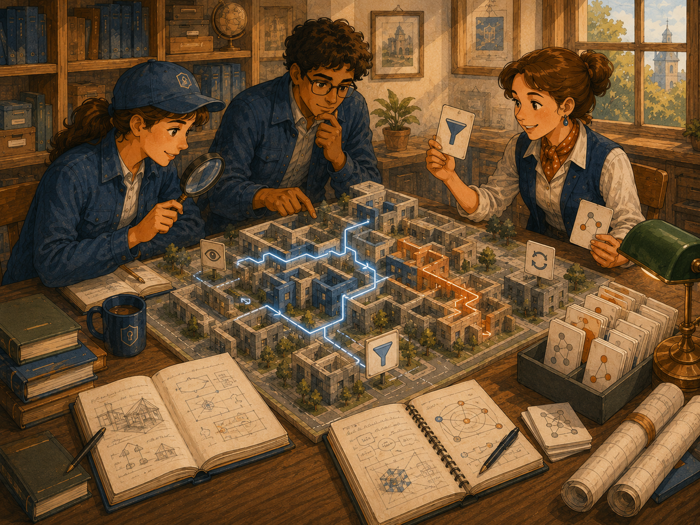

KANDA Reasoner Help
First-Time User TutorialProject Structure 3D
Create source-safe visualization JSON and explore it in a read-only three-dimensional graph.
What Project Structure 3D Means
Project Structure 3D displays a graph built from existing KANDA evidence.
In plain English: It is a visual map. Project items become nodes and relationships become connections.
What This Tab Does
- Show fixture or live project evidence
- Create a fresh Project JSON ZIP family
- Update Project JSON incrementally
- Switch between Architecture and Structure
- Filter Imports, External, Symbols, and Semantic content
- Refresh evidence
- Search visible nodes
- Fit or reset the graph camera
- Open a local browser preview
- Navigate, isolate, expand, collapse, and trace paths
- Inspect selected-node details
What This Tab Does Not Do
It does not edit source files, write inside the selected project tree, replace architecture owners, validate code changes, or treat generated JSON as source authority.
Fixture Versus Live Project Evidence
Read-only fixture
Before project selection, the badge says READ-ONLY FIXTURE and the project label says Project: not selected.
Live evidence
After project selection, the tab resolves canonical evidence and rebuilds the graph. Use Refresh evidence when that evidence changes.
Project JSON Controls
JSON is necessary for visualization. The Create button is green when a valid Project JSON ZIP family exists and red when it is missing.
Create Project JSON
Deletes the previous Project Structure 3D JSON family only after confirmation, builds a fresh disk-backed index, and streams JSON bytes directly into ZIP members. Artifacts are published in <project>_show_project_to_AI/project_structure_3d_json, outside second_prompt_files. Each ZIP part is limited to 450 MB.
Update JSON Incrementally
Adds new information, updates changed files, removes deleted files, and preserves unchanged indexed records. A successful full creation is required first.
The sonar animation remains active while the separate process works. The previous published ZIP family remains available until the replacement validates and publishes.
Architecture and Structure Modes
Architecture emphasizes packages, modules, grouping, and dependency relationships.
Structure emphasizes paths, files, symbols, classes, functions, and detailed containment.
Filters, Search, and Navigation

Imports
Shows or hides import and dependency relationships.
External
Shows or hides external dependency nodes.
Symbols
Shows or hides symbol-level nodes.
Semantic
Shows or hides semantic relationships.
Search
Search for a package, module, class, function, dependency, or path.
Fit graph and Reset camera
Fit graph restores the visible graph to the viewport. Reset camera restores the default camera.
Open in Browser
Opens a local read-only browser preview. It does not publish the graph or permit arbitrary external navigation.
Navigation Bar
Back and Forward move through viewer history. Overview restores the graph overview. Isolate, Expand, Collapse, and Trace path refine the current exploration.
Selecting Nodes and Reading Details
Click a node to update the read-only details panel. Click the background to clear selection and return to overview details.
Renderer Status and Fallback
The status line reports evidence loading, renderer loading, bridge connection, selections, searches, blocked navigation, and diagnostics.
The primary viewer uses Qt WebEngine. When unavailable, the tab shows a contained fallback and may still provide a local browser preview.
Read-Only Safety Boundary
In plain English: The tab may create its own visualization ZIPs, but the map does not become the project and never edits source.
What Success Looks Like
- Correct project label
- Clear fixture or evidence badge
- Graph loaded without unresolved renderer errors
- Modes and filters working
- Search finding a known node
- Fit graph restoring the view
- Selection updating details
- Source remaining unchanged
Common Mistakes
- Treating the fixture as live evidence
- Searching for nodes hidden by filters
- Confusing Architecture and Structure
- Assuming Refresh is a new independent scanner
- Assuming Open in browser publishes the graph
- Treating the viewer as validation authority
If Something Goes Wrong
Check the active project, source badge, status line, filters, evidence freshness, and renderer diagnostics. Use Fit graph or Reset camera when the camera is lost.
First-Time Checklist
- Correct project selected
- Project label and source badge checked
- Renderer status checked
- Architecture and Structure compared
- Filters changed deliberately
- Search tested
- Node details inspected
- Important conclusions verified in the owning evidence or source
Final Rule
Use Project Structure 3D to create source-safe visualization evidence and explore it, but verify important conclusions in the owning source or workflow. Generated Project JSON is never source authority.